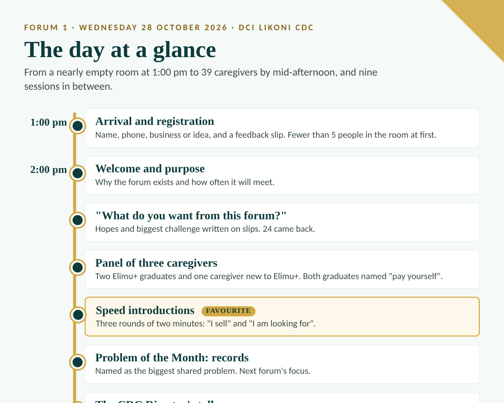
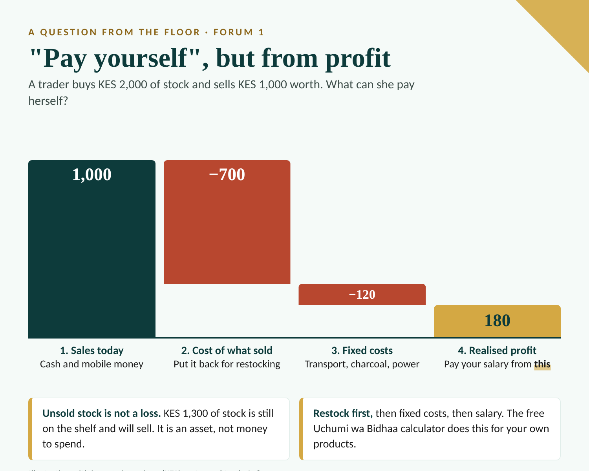
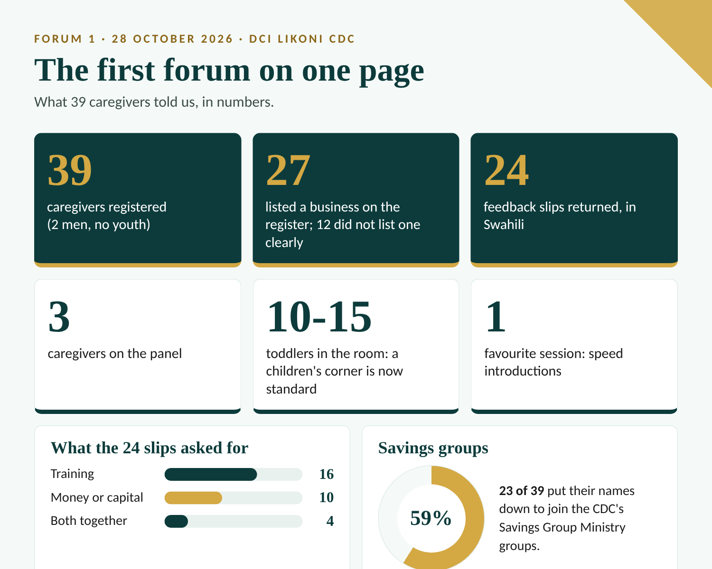

On Wednesday 28 October 2026, thirty-nine caregivers came to DCI Likoni CDC for the first Elimu+ forum. We expected to teach. Mostly, we listened, and what we heard changed our plans for the next one.
Registration opened at 1:00 pm and the programme began at 2:00 pm, as planned. At 1:00 pm there were fewer than five people in the room. By the middle of the afternoon all 39 registered caregivers had arrived, and the room stayed warm and engaged until we closed at 4:30 pm. Two of them were men, none were youth, and some had never attended an Elimu+ training before. That mix was the point: the forum is open to anyone who has been trained and is interested, whatever the state of their business.

What they asked for: knowledge first, capital second
On arrival every caregiver was handed a slip with two questions: what do you want from this forum, and what is the biggest challenge in your business? Twenty-four slips came back. Reading them together was the most useful hour of our week.
What caregivers wanted from the forum
Number of the 24 slips that asked for each. A slip can ask for more than one thing.
Two in three slips asked for training, which is what the CDC Director had hoped to hear. Her message to the room was plain: take the opportunity to learn, because the knowledge is certain and funding may not come. The caregivers received it warmly. Still, ten slips asked for money, so expectations about funding are real, and we will keep saying honestly what Elimu+ and the CDC can and cannot promise.
The biggest challenge, in their words
Number of slips that named each challenge as the biggest one.
"Mvua ikinyesha mboga hupotea."
When it rains, the vegetables spoil. A caregiver, on her biggest challenge.Insight: "capital" usually means something more specific
Behind the word capital were an oven, a thermos so a cake seller can also sell coffee, a set of salon tools, a power backup. The discussion on the day added causes no slip mentioned: power cuts that spoil a nail technician's work in progress, high tomato prices, and a food seller whose sales fall when schools are closed. A specific need can be planned for. A vague one cannot. We are compiling an equipment and power list from the slips and the discussion. It is a list to consider with the CDC and partners, and not a promise of funding.
"Pay yourself", but from profit
Three caregivers sat on the panel: a cake seller new to Elimu+, a trader who sells cake, eggs and smokies from a trolley, and a small grocer selling bananas, soap and cake. Both panellists who had completed Elimu+ training said the same thing, more than once: the one thing they now do differently is pay themselves. Hearing that from two people in their own words is the clearest sign from the day that the training changes behaviour.
A question from the floor then showed where the idea needs finishing. A trader buys stock worth KES 2,000 but sells only KES 1,000 worth by the end of the day. What should she do? The room suggested taking part of the margin as a salary and recouping it later. That points the right way, but it leaves out fixed costs and restocking. Here is the fuller logic, with invented numbers for one day:
| Step | What to do | Illustrative amount (KES) |
|---|---|---|
| 1. Count what you sold | Sales for the day, cash and mobile money | 1,000 |
| 2. Take out the cost of what you sold | Only the items that left the shelf, not the whole KES 2,000 of stock | 700 |
| 3. Put back money for restocking | This is the KES 700 above, kept aside to buy the same stock again | (kept aside) |
| 4. Take out your share of the day's fixed costs | Transport, charcoal, power, licence, shared across the days you trade | 120 |
| 5. What is left is realised profit | Pay yourself a salary from this, not from stock you have not yet sold | 180 |

Unsold stock is not a loss: here KES 1,300 of it is still on the shelf and will sell. What matters is the cost of the items that were sold, the share of fixed costs for the day, and putting back the money for restocking before any salary is paid. These amounts are an illustration and not a real trader's figures. The free Uchumi wa Bidhaa calculator helps a trader work this out for her own products, and it is the second half of "pay yourself" that we will teach hands-on at the next forum.
The favourite session had nobody selling anything
Speed introductions were the session caregivers enjoyed most: three rounds of two minutes, one minute each, using two lines, "I sell" and "I am looking for". Nobody sold to anyone this time, but the room was loud with possibility. Clothes sellers and salon traders were the two largest groups on the register, and traders in the same line face the same suppliers and customers, so they are natural partners for shared buying, referrals and swapping tips.
"Jinsi ya kutunza biashara isife."
How to keep a business from dying. A caregiver, on what she wants to learn.At the next forum each caregiver will fill in an "I sell / I am looking for" card (Nauza / Natafuta) at registration, so that needs and offers can be matched, and traders in the same line can sit together for one round.
23 of 39 want to save together
Two caregivers spoke about the value of saving inside the structure that the CDC's Savings Group Ministry has set up, and announced that groups will be formed. Twenty-three caregivers wrote their names down to join.
Interest in joining a savings group
Share of the 39 registered caregivers who marked their name.
Savings groups usually work best with about 15 to 20 members who meet weekly, so this is enough interest for one or two groups. They will start only when leaders, materials and a meeting rhythm are ready, and not before.
These savings groups are run by the CDC, and they are separate from the Elimu+ SACCO we are still planning. Weekly savings meetings could also answer something else we heard.
"Let us meet every week"
When we asked how often caregivers wanted to meet, the answer came back at once: weekly. Some of that was the excitement of a good afternoon, and weekly forums would be hard for a host CDC and a small team to sustain, so the forum stays monthly. We still take the request seriously. It tells us caregivers want more contact and more practical help than a monthly rhythm gives, and savings groups and trade partnerships can partly meet that need between forums.
What we got wrong, and what we will change
An honest forum report has a column for this. These are the lessons, and what we are doing about each.
| What we saw | What we are changing |
|---|---|
| The room filled slowly, so the welcome and the panel reached a small audience at first | Open with activities people can join at any time, and move the panel, savings update and Director's talk to after about 3:00 pm |
| Slips came in all afternoon, too late to shape the day | Collect slips at registration and tally them in the first hour |
| Records were named as the biggest shared problem, but the session only introduced it | A hands-on records clinic and a simple daily sales handbook at the next forum |
| Toddlers, about 10 to 15 of them, were a handful for caregivers looking after them | A children's corner with minders and simple learning activities, planned as a standard part of every forum |
| Registers did not record which Elimu+ training each person attended | Record training attended, what each caregiver sells and what she is looking for |
What happens next
- Next forum, end of November 2026. The date will be communicated to partner organisations and past participants. Its focus is the records clinic and the second half of "pay yourself".
- Savings groups. The CDC and its Savings Group Ministry will call everyone who put their name down and hold a separate launch meeting once leaders and materials are in place.
- No forum in December. We will rest, and see you in the new year.

A note on the numbers
Attendance of 39 comes from the registration sheets. Twenty-seven caregivers listed a business and twelve did not list one clearly, which includes people who may intend to start. Slip counts and theme tags are our own coding of 24 handwritten slips translated from Swahili, and one slip can carry several themes. The panel and talks are described from the facilitators' account of the day. Names are left out on purpose.
If your organisation has hosted an Elimu+ cohort and you would like your caregivers at the next forum, message us on WhatsApp and we will add you.